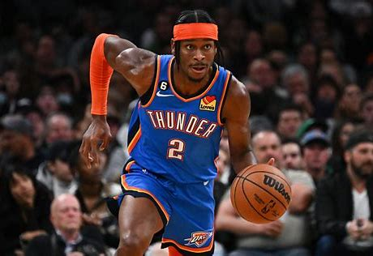

The NBA has become a very talented league with a large group of extremely skilled individuals. How certain players cement history over the rest is by the MVP trophy, it stands players alone at the top until another player reaches them. There are many all-stars and superstars within the league, but not many has what it takes to become MVP. Lets take a look at some statistics for this season. Here is my top 5.
| Players | PPG | RPG | APG |
|---|---|---|---|
| Shai Gilgeous-Alexander | 31.4 | 5.5 | 6.0 |
| Nikola Jokic | 30.6 | 13.2 | 9.9 |
| Giannis Antetokounmpo | 31.3 | 11.8 | 6.1 |
| Jayson Tatum | 27.7 | 9.4 | 5.4 |
| Victor Webanyama | 24.7 | 10.7 | 3.7 |
My personal opinion for the NBAs MVP so far would be Shai Gilgeous-Alexander. He has been killing it this season, and has led the thunder to the #1 team in the west, as well as being the number one team in the league. A close second place for me right now and maybe first in the future would be Nikola Jokic. He is shooting for his 4th MVP within the league and that would solidify him with some of the greatest players of all time.
